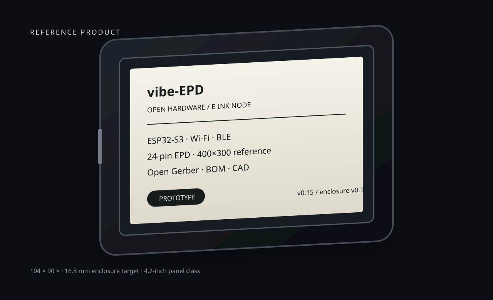
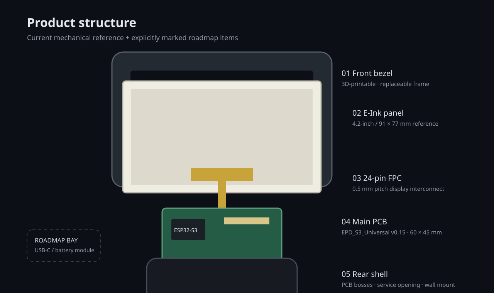
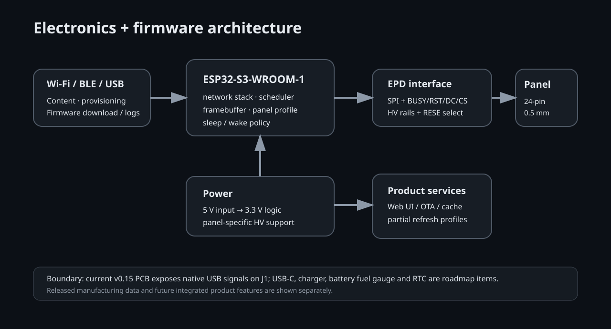
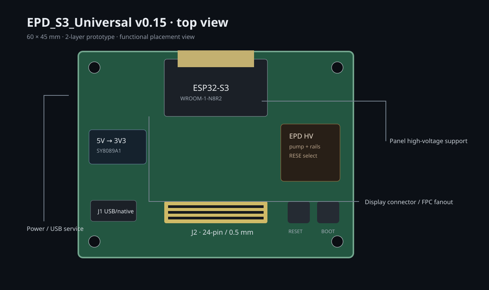
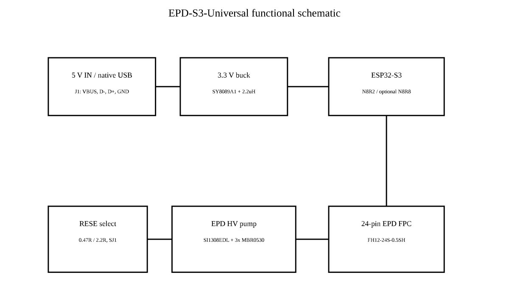
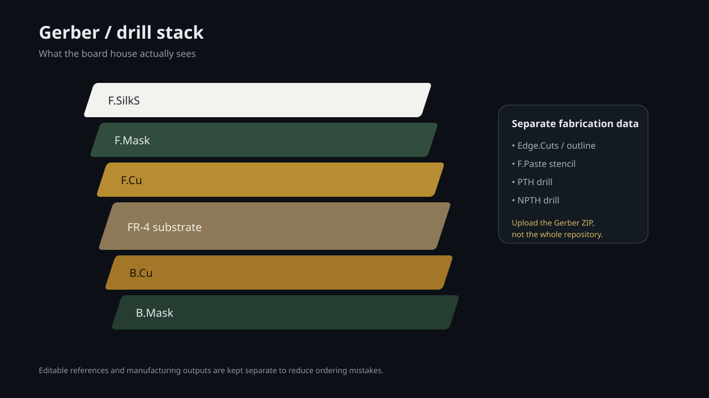
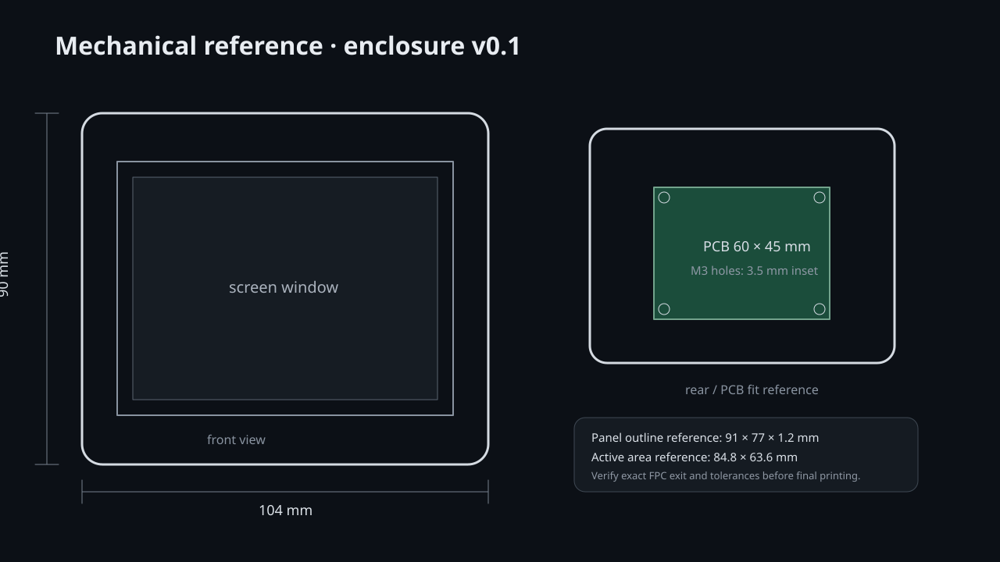
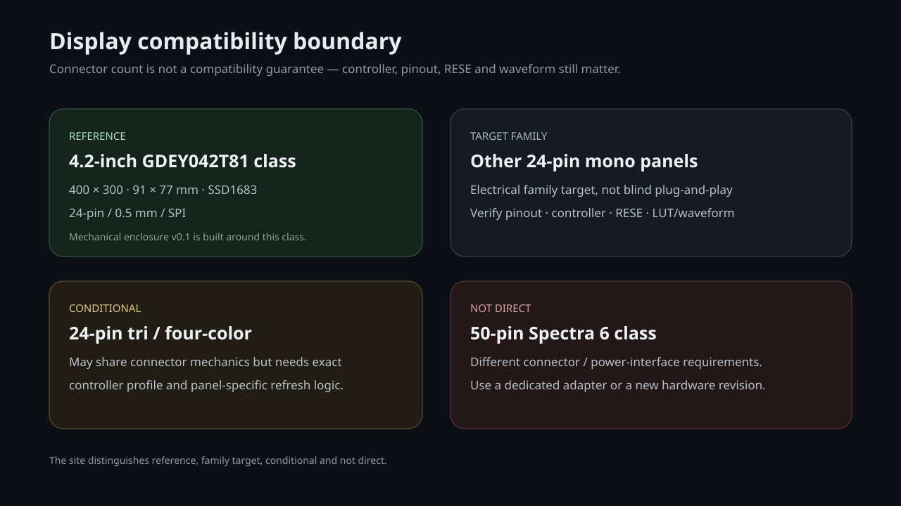

vibe-EPD 把 ESP32-S3 墨水屏主板、24-pin E-Paper 接口、固件、制造数据、参数化外壳和产品级技术文档放进同一个可复现工程。

不再只展示 Gerber。页面把屏幕、FPC、PCB、结构件、安装空间与未来扩展边界放到一张产品结构图里，避免把“路线图”误当成“已经做进 PCB 的功能”。

切换查看系统架构、真实 PCB 预览、原理图与 Gerber 图层。硬件制造文件、BOM/CPL 和机器可读参考数据都在仓库中。




ESP32-S3-WROOM-1-N8R2，利用 Wi-Fi/BLE 能力；J1 暴露原生 USB 信号与 5 V/GND。
24-pin、0.5 mm FPC，包含 SPI、BUSY/RESET/DC/CS、I²C 与 EPD 高压辅助网络。
USB-C、锂电充电、fuel gauge、RTC 将作为后续集成硬件修订；当前 v0.15 不伪装成已具备。
已经加入参数化 OpenSCAD 源文件。v0.1 以 4.2-inch、91 × 77 mm 屏幕机械尺寸为参考，并按现有 60 × 45 mm PCB 的四个 M3 孔位生成安装柱。

网页直接加载仓库内的 BOM 数据。可以搜索位号、型号、厂家或 LCSC 料号，不用先下载 CSV。
| Ref | Value / Part | Manufacturer | LCSC | Assembly |
|---|---|---|---|---|
| Loading BOM… | ||||
仓库同时保留板厂文件和工程参考数据。当前验证报告来自生成流程的几何检查，不等同于“已经实物量产验证”。
网络表、针脚表、设计验证记录。
Gerber + PTH/NPTH drill + BOM + CPL。
板厂 DFM、SMT 旋转检查、5 pcs 首板验证。
实测后再冻结 USB-C / battery / RTC 等产品化修订。
参考结构锁定到 4.2-inch 机械模板，但电子接口保留为通用 24-pin 方向。较新的 50-pin Spectra 6 等面板仍应使用专用适配/独立硬件修订。

开发、制造、结构三个入口分开，避免把整个仓库 ZIP 当成 Gerber 上传。
当前可下载 Gerber、BOM/CPL、固件 bring-up 与验证资料。
4.2-inch 前框、后壳、OpenSCAD 和产品结构可视化。
USB-C、battery charger/fuel gauge、RTC，以及针对确定屏幕系列的正式 firmware profile。